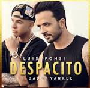

Featured Music: Despacito
lissen the official audio with lyrics:

despacito lyrics
Oh! ¡Ay! Fonsi, D.Y. Fonsi, DY Oh, oh no, oh no (oh) Oh, oh no, oh no (oh) hey yeah Hey yeah Diridiri, dirididi Daddy Diridiri, dirididi Daddy Go! Go! Yes, you know I've been looking at you for a while now Sí, sabes que ya llevo un rato mirándote I have to dance with you today (DY) Tengo que bailar contigo hoy (DY) I saw that your look was already calling me Vi que tu mirada ya estaba llamándome Show me the way that I'm going Muéstrame el camino que yo voy Oh, you, you are the magnet and I am the metal Oh, tú, tú eres el imán y yo soy el metal I'm getting closer and putting together the plan Me voy acercando y voy armando el plan Just thinking about it makes your pulse accelerate (oh yeah) Solo con pensarlo se acelera el pulso (oh yeah) Yes, I like you more than usual Ya, ya me estás gustando más de lo normal All my senses are asking for more Todos mis sentidos van pidiendo más This must be taken without any rush Esto hay que tomarlo sin ningún apuro Slowly Despacito I want to breathe your neck slowly Quiero respirar tu cuello despacito Let me tell you things in my ear Deja que te diga cosas al oído So that you remember if you are not with me Para que te acuerdes si no estás conmigo Slowly Despacito I want to undress you with kisses slowly Quiero desnudarte a besos despacito Sign the walls of your maze Firmar las paredes de tu laberinto And make your body a whole manuscript (up, up, up) Y hacer de tu cuerpo todo un manuscrito (sube, sube, sube) (Go up, go up) Oh (Sube, sube) Oh I want to see your hair dance Quiero ver bailar tu pelo I want to be your rhythm (uh oh, uh oh) Quiero ser tu ritmo (uh oh, uh oh) That you show my mouth (uh oh, uh oh) Que le enseñes a mi boca (uh oh, uh oh) Your favorite places (favorites, favorites baby) Tus lugares favoritos (favoritos, favoritos baby) Let me get over your danger zones (uh oh, uh oh) Déjame sobrepasar tus zonas de peligro (uh oh, uh oh) Until I provoke your screams (uh oh, uh oh) Hasta provocar tus gritos (uh oh, uh oh) And may you forget your last name (dirididi Daddy) Y que olvides tu apellido (dirididi Daddy) I know you're thinking about it (eh) Yo sé que estás pensándolo (eh) I've been trying for a while (eh) Llevo tiempo intentándolo (eh) Mommy, this is giving and giving Mami, esto es dando y dándolo You know your heart with me makes you bam bam Sabes que tu corazón conmigo te hace bam bam You know that baby is looking for me bam bam Sabe que esa beba 'tá buscando de mi bam bam Come taste my mouth to see how it tastes to you Ven prueba de mi boca para ver cómo te sabe I want, I want, I want to see how much love you have Quiero, quiero, quiero ver cuánto amor a ti te cabe I'm not in a hurry, I want to take the trip Yo no tengo prisa, yo me quiero dar el viaje We started slow, then wild Empezamo' lento, después salvaje Step by step, soft little Pasito a pasito, suave suavecito We are going to stick a little bit Nos vamos pegando poquito a poquito When you kiss me with that skill Cuando tú me besas con esa destreza I see that you are malice with delicacy Veo que eres malicia con delicadeza Step by step, soft little Pasito a pasito, suave suavecito We are getting closer, little by little (oh oh) Nos vamos pegando, poquito a poquito (oh oh) And that beauty is a puzzle (oh no) Y es que esa belleza es un rompecabezas (oh no) But to assemble it here I have the piece (slow, oh yeah) Pero pa' montarlo aquí tengo la pieza (slow, oh yeah) Slowly (yeh, me) Despacito (yeh, yo) I want to breathe your neck slowly (me) Quiero respirar tu cuello despacito (yo) Let me say things in your ear (me) Deja que te diga cosas al oído (yo) So that you remember if you are not with me Para que te acuerdes si no estás conmigo Slowly Despacito I want to undress you with kisses slowly (yeh) Quiero desnudarte a besos despacito (yeh) Sign the walls of your maze Firmar las paredes de tu laberinto And make your body a whole manuscript (up, up, up) Y hacer de tu cuerpo todo un manuscrito (sube, sube, sube) (Go up, go up) Oh (Sube, sube) Oh I want to see your hair dance Quiero ver bailar tu pelo I want to be your rhythm (uh oh, uh oh) Quiero ser tu ritmo (uh oh, uh oh) That you show my mouth (uh oh, uh oh) Que le enseñes a mi boca (uh oh, uh oh) Your favorite places (favorites, favorites baby) Tus lugares favoritos (favoritos, favoritos baby) Let me get over your danger zones (uh oh, uh oh) Déjame sobrepasar tus zonas de peligro (uh oh, uh oh) Until I provoke your screams (uh oh, uh oh) Hasta provocar tus gritos (uh oh, uh oh) And forget your last name Y que olvides tu apellido Slowly Despacito Let's do it on a beach in Puerto Rico Vamo' a hacerlo en una playa en Puerto Rico Until the waves scream "Oh, blessed one" Hasta que las olas griten "Ay, bendito" So that my seal stays with you (dance it) Para que mi sello se quede contigo (báilalo) Step by step, soft little (hey yeah, yeah) Pasito a pasito, suave suavecito (hey yeah, yeah) We are getting closer, little by little (oh no) Nos vamos pegando, poquito a poquito (oh no) That you show my mouth (uh oh, uh oh) Que le enseñes a mi boca (uh oh, uh oh) Your favorite places (favorites, favorites baby) Tus lugares favoritos (favoritos, favoritos baby) Step by step, soft little Pasito a pasito, suave suavecito We are going to stick a little bit Nos vamos pegando, poquito a poquito Until I provoke your screams (eh-oh) (Fonsi) Hasta provocar tus gritos (eh-oh) (Fonsi) And forget your last name (DY) Y que olvides tu apellido (DY) Slowly Despacito